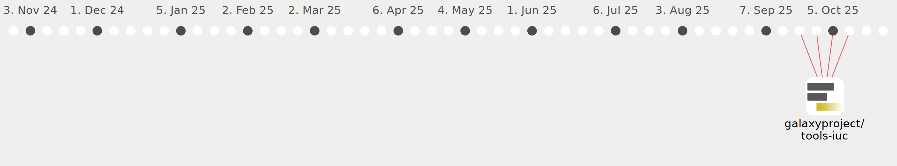

spond

Commits all-time: 66
Commits last year: 61

(61)
- 7846506
- 243d0f2
- 22ac041
- d400990
- d7eeff7
- 06d5c43
- 0ee3415
- f51cb20
- 4c303bb
- 5b422df
- ab6dfe7
- bceca8c
- 1b2d006
- 117fc63
- e32a0bc
- bee9bd7
- a2691c7
- 70f8b80
- f8305fb
- 169da00
- bdb6292
- 2b9e609
- 1538a11
- 90a6f76
- c0c253f
- 8a804c1
- 069938c
- a8487e9
- f872b2b
- e08ed3f
- 6b09e82
- 2afd087
- 53eedb8
- 046cc4d
- ecc898d
- 26eaf15
- 001d197
- 0a65a3c
- c6e9434
- febfc42
- f9d76a4
- cae7ff0
- 818c485
- f6ef3ad
- 63f0ea3
- c625261
- 77da96d
- 53dd462
- ba1e381
- ce93723
- 92e93c4
- 7b59e0b
- 06a979d
- c4af0ae
- 337d226
- e2714d6
- 7a68452
- 577aa48
- 211ecc5
- 63fa1ff
- cf39eb6